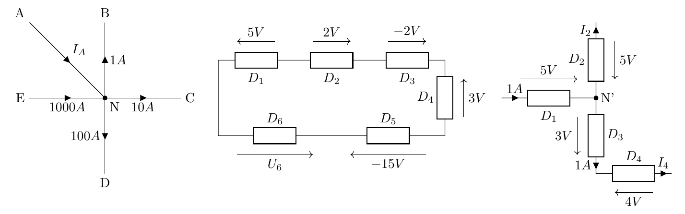
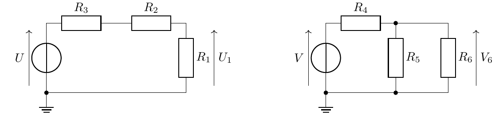
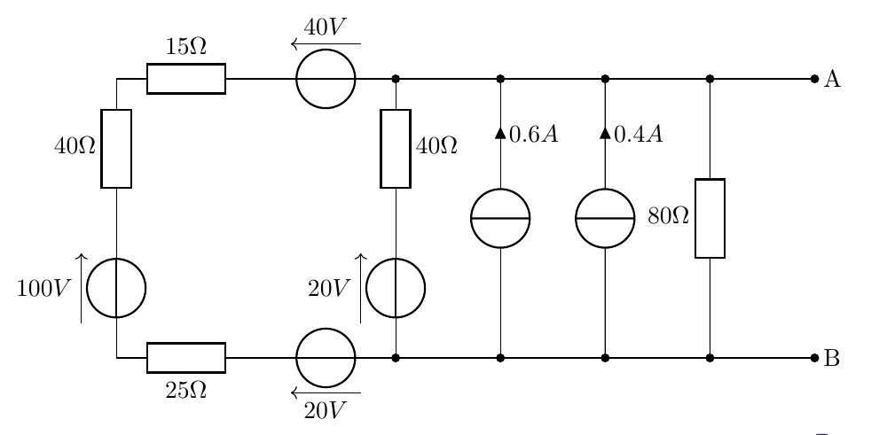
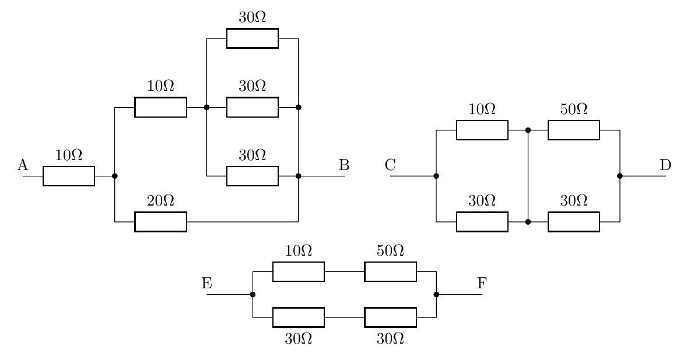
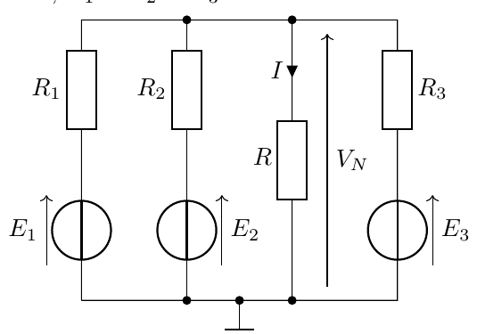
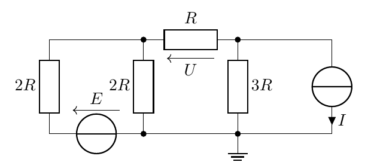
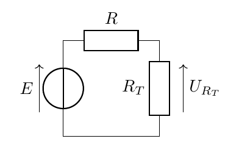
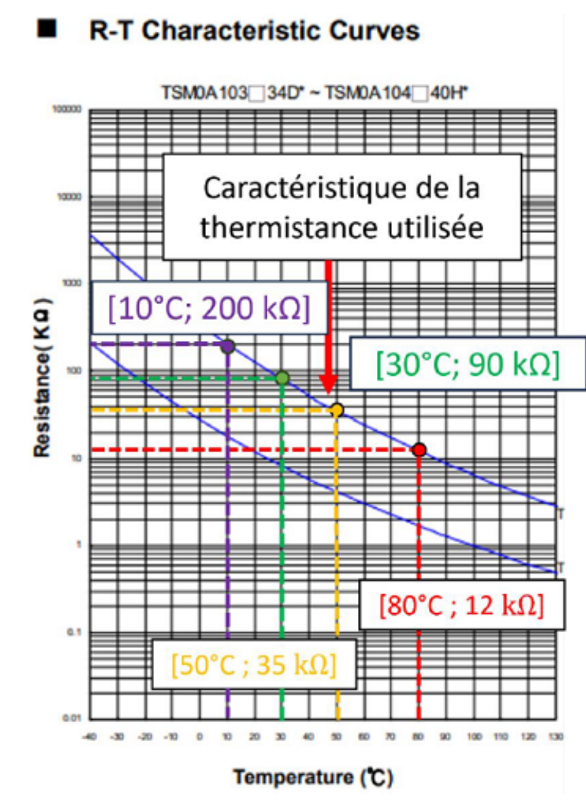
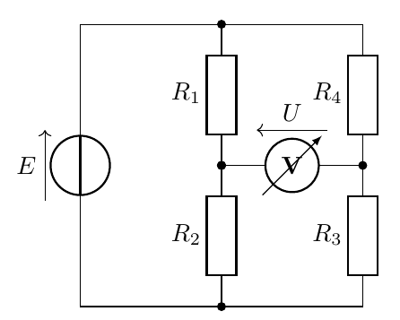

TD 1 — Notions de base
Lois de Kirchhoff, diviseurs, Thévenin-Norton, Millman, superposition. Pour chaque exercice : le réflexe, des indices, puis la correction étape par étape. Cherche avant de révéler.
Pas de corrigé officiel fourni : correction rédigée à partir du cours. Compare avec la séance.
Exercice 1 — Valeurs non définies
15 min
Schéma 1 (nœud N)
Entrent : $I_A$ (de A vers N) et 1000 A (de E). Sortent : 1 A (vers B), 10 A (vers C), 100 A (vers D). $$I_A+1000=1+10+100\Rightarrow\boxed{I_A=-889\ \mathrm A}$$ Le courant réel va de N vers A (889 A).
Schéma 2 (maille) — méthode des potentiels
Une flèche de tension pointe vers le potentiel le plus haut ($U_{AB}=V_A-V_B$, pointe sur A). Pars du coin haut gauche, $V_0$ :
D₁ (5 V, flèche ←) : $V_1=V_0-5$ ; D₂ (2 V, →) : $V_2=V_1+2=V_0-3$ ; D₃ (−2 V, ←) : $V_3=V_2+2=V_0-1$ ; D₄ (3 V, ↑) : bas = $V_0-4$ ; D₅ (−15 V, ←) : gauche de D₅ = $V_0-4-15=V_0-19$.
D₆ : $U_6$ (→) = $V_{droite}-V_{gauche}=(V_0-19)-V_0$ ⇒ $\boxed{U_6=-19\ \mathrm V}$.
Schéma 3 (nœud N')
Entre : 1 A (par D₁). Sortent : $I_2$ (vers le haut par D₂) et 1 A (vers le bas par D₃) ⇒ $1=I_2+1$ ⇒ $\boxed{I_2=0}$. Le courant de D₃ continue dans D₄ (pas d'autre chemin) ⇒ $\boxed{I_4=1\ \mathrm A}$.
Les valeurs négatives sur le schéma (−2 V, −15 V) : on les garde avec leur signe dans la loi des mailles, elles signifient juste que la vraie tension est dans l'autre sens.
Exercice 2 — Diviseur de tension
10 min
Circuit 1
R₃, R₂, R₁ en série (même courant) : $U_1=U\dfrac{R_1}{R_1+R_2+R_3}$. A.N. : $U_1=12\times\frac13=\boxed{4\ \mathrm V}$.
Circuit 2 : regrouper d'abord
R₅ et R₆ sont en parallèle (mêmes nœuds) : $R_{56}=\dfrac{R_5R_6}{R_5+R_6}$. Puis diviseur entre R₄ et $R_{56}$ : $$V_6=V\frac{R_{56}}{R_4+R_{56}}=V\frac{R_5R_6}{R_4(R_5+R_6)+R_5R_6}$$ A.N. : $R_{56}=300$ Ω ⇒ $V_6=4\times\frac{300}{400}=\boxed{3\ \mathrm V}$.
Exercice 3 — Dipôle AB équivalent
25 min
Indice
La grande boucle de gauche (100 V, 40 V, 20 V, 40 Ω, 15 Ω, 25 Ω) est UNE branche entre le nœud du haut (X) et celui du bas (Y). Calcule $V_X-V_Y$ à vide en suivant les flèches.
Branche de gauche → un Thévenin
À vide, aucun courant dans la branche. On part de Y (0 V) : source 20 V du bas (flèche ← : pointe à gauche) ⇒ +20 V ; résistance 25 Ω : pas de chute ; source 100 V (↑) ⇒ 120 V ; 40 Ω, 15 Ω : rien ; source 40 V du haut (flèche ← : pointe vers la gauche, donc côté X plus bas de 40 V) ⇒ $V_X=80$ V.
Branche gauche ≡ E = 80 V (X au +) en série avec R = 40 + 15 + 25 = 80 Ω.
Branche du milieu
Source 20 V (↑) en série avec 40 Ω : Thévenin $E=20$ V, $R=40$ Ω, X au +.
Tout en Norton
Gauche : $I=80/80=1$ A vers X, ∥ 80 Ω. Milieu : $I=20/40=0{,}5$ A vers X, ∥ 40 Ω. Sources de courant : 0,6 A et 0,4 A vers A. Résistance 80 Ω.
Association
Courants en parallèle : $I_N=1+0{,}5+0{,}6+0{,}4=2{,}5$ A. Résistances en parallèle : $\frac1{R_N}=\frac1{80}+\frac1{40}+\frac1{80}=\frac4{80}$ ⇒ $R_N=20$ Ω.
Résultat
Le dipôle AB est un générateur réel : Norton $I_N=2{,}5$ A ∥ $R_N=20$ Ω, soit Thévenin $E_{th}=R_NI_N=50$ V en série avec $R_{th}=20$ Ω (A au +).
Les sens des flèches des sources (celle de 40 V et celle de 20 V du bas pointent vers la gauche : elles ne s'ajoutent pas toutes dans le même sens). Et ne pas oublier la résistance de 80 Ω de droite dans le parallèle.
Exercice 4 (bonus) — Résistances équivalentes
15 min
A–B
Trois 30 Ω en parallèle : 10 Ω. En série avec 10 Ω : 20 Ω. En parallèle avec 20 Ω : 10 Ω. En série avec le 10 Ω d'entrée : $\boxed{R_{AB}=20\ \Omega}$.
C–D (avec le fil vertical)
Le fil relie les deux points milieux : ils sont confondus. On a donc (10 ∥ 30) en série avec (50 ∥ 30) : $7{,}5+18{,}75=\boxed{26{,}25\ \Omega}$.
E–F (sans fil)
Deux branches série en parallèle : $(10+50)\parallel(30+30)=60\parallel60=\boxed{30\ \Omega}$.
C–D et E–F ont les mêmes résistances, mais un simple fil change tout : il force l'égalité des potentiels au milieu. Toujours chercher d'abord les nœuds réellement distincts.
Exercice 5 — Millman
10 min
Millman
$$V_N=\frac{\frac{E_1}{R_1}+\frac{E_2}{R_2}+\frac{E_3}{R_3}+\frac0R}{\frac1{R_1}+\frac1{R_2}+\frac1{R_3}+\frac1R}$$
A.N.
$V_N=\dfrac{3\times0{,}4}{0{,}3+0{,}04}=\dfrac{1{,}2}{0{,}34}\approx\boxed{3{,}53\ \mathrm V}$ ; $I=\dfrac{V_N}R\approx\boxed{0{,}141\ \mathrm A}$.
Vérification de bon sens
Sans R, $V_N$ vaudrait 4 V (trois sources identiques). R « tire » du courant ⇒ $V_N$ un peu inférieur à 4 V ✓.
Exercice 6 — Superposition
20 min
Indice : lecture du schéma
Nœud P (gauche de R) : relié à la masse par 2R (milieu) et par la branche « 2R + source E » (gauche). Nœud Q (droite de R) : relié à la masse par 3R et par la source de courant I (qui retire I de Q). $U=V_P-V_Q$ (flèche ←, pointe à gauche).
Source E seule (I ouverte)
Vu de P, la branche (E, 2R) et le 2R du milieu forment un Thévenin : $E_{th}=E\frac{2R}{2R+2R}=\frac E2$, $R_{th}=2R\parallel2R=R$. Puis la maille $R_{th}$ – R – 3R : $i=\dfrac{E/2}{R+R+3R}=\dfrac{E}{10R}$ de P vers Q. $$U_E=Ri=\frac E{10}$$
Source I seule (E = fil)
Le courant I est retiré de Q. Il arrive de la masse par deux chemins : 3R, et R + (2R ∥ 2R) = 2R. Diviseur de courant : le chemin par R reçoit $I\frac{3R}{3R+2R}=\frac{3I}5$, de P vers Q. $$U_I=R\cdot\frac{3I}5=\frac{3RI}5$$
Somme
$$U=\frac E{10}+\frac{3RI}{5}=0{,}5+0{,}6=\boxed{1{,}1\ \mathrm V}$$
Exercice 7 (bonus) — Détection de température
10 min
Voir la datasheet

Diviseur de tension
$U_{R_T}=E\dfrac{R_T}{R+R_T}$
Tableau
| T (°C) | 10 | 30 | 50 | 80 |
|---|---|---|---|---|
| R_T (kΩ) | 200 | 90 | 35 | 12 |
| U_RT (V) | 3,33 | 2,37 | 1,30 | 0,54 |
La tension diminue quand la température monte : thermistance à coefficient négatif (CTN). On a un capteur : mesurer U ⇒ connaître T.
Exercice 8 — Pont de Wheatstone
20 min
Potentiels des points milieux (bas = 0, haut = E)
Gauche (entre R₁ et R₂) : $V_M=E\dfrac{R_2}{R_1+R_2}$. Droite (entre R₄ et R₃) : $V_N=E\dfrac{R_3}{R_3+R_4}$.
U (flèche ← : $U=V_M-V_N$)
$$U=E\left(\frac{R_2}{R_1+R_2}-\frac{R_3}{R_3+R_4}\right)$$
Équilibre
$U=0$ ⇔ $R_2(R_3+R_4)=R_3(R_1+R_2)$ ⇔ $\boxed{R_2R_4=R_1R_3}$ (produits « en croix » égaux). Indépendant de E !
Application
$R_1=\dfrac{R_2R_4}{R_3}=R_4$ (car R₂ = R₃) : R₁ = 200 kΩ (10 °C), 90 kΩ (30 °C), 35 kΩ (50 °C), 12 kΩ (80 °C). On lit la résistance du capteur sur le potentiomètre quand le voltmètre affiche 0 : méthode de zéro, très précise.